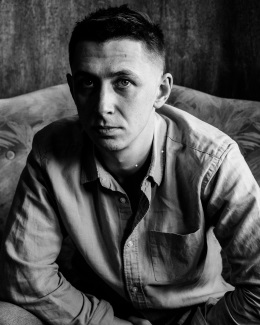

I'm a mid-career professional with 4,5 year's project-work (non-IT) experience. I'm strongly motivated, has an upper intermediate spoken and written English level (B2), analytical mindset, team work experience and problem solving skills, etc. Physically and spiritually ready for overtimes and hardworking.
- Skills
-
Office/business skills
Team management, business communication, preparing and conducting of meetings, presentations and trainings
Computer skills
JS, CSS, Html, SQL, Git, Trello, MS Office
- Code examples
- All code available at my GitHub page
- Experience
-
Teqniksoft LLC Data entry specialist - Minsk, 2018 - until now
- Analysis, planning and management in small woodworking enterprise
- Search/procurement/delivery of necessary technological equipment, instrument, consumable materials, spare parts.
- Conversations with the foreign customers, searching the customers, direct mail.
Iva-Wood LLC Deputy director - Minsk, 2017-2018
- Analysis, planning and management in small woodworking enterprise
- Search/procurement/delivery of necessary technological equipment, instrument, consumable materials, spare parts.
- Conversations with the foreign customers, searching the customers, direct mail.
EY (Ernst&Young)Tax Analyst - Minsk/Moscow - 2013-2017
- Preparation of transfer pricing documentation
- Internal thematic trainings, training of Junior employees.
- Preparation of commercial proposals
- Assisting in client meetings
- Preparation and editing of contracts
- Education
-
BSUIR IEF, Economics and organization of production, 2008-2013
- Industrial engineering and management in production of radioelectronics
- Basics of programming in C++, Javascript, Html. We actively used BPwin, Visio, MS Excel and other MS products.
- PCB design using AutoCAD.
ITMine course Business-analysis in IT, 2017
- Practicing requirements elicitation process
- Learning the stages of IT development process
- Preparation of Requirements specification
EY Business English Language course, 2017
Internal EY language cources.
Introduction to computer science CS course, 2017
Udacity online course, based on Python programming language.
- English Level
- Upper-intermediatete - B2.
- Spoken expirience: speaking with international clients by phone, conducting trainings and presentations for junior colleagues.
- Written expirience: preparation of Tax documentation in English, business correspondence